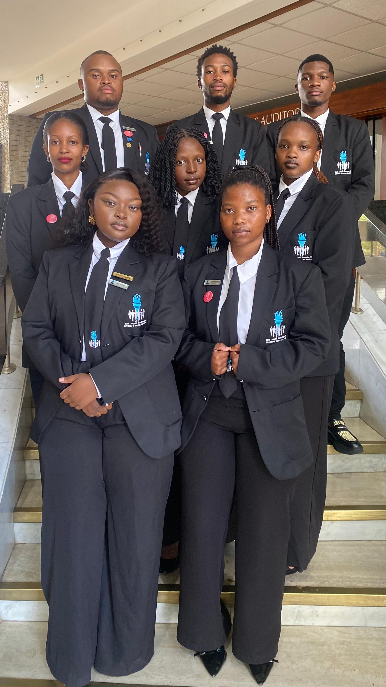
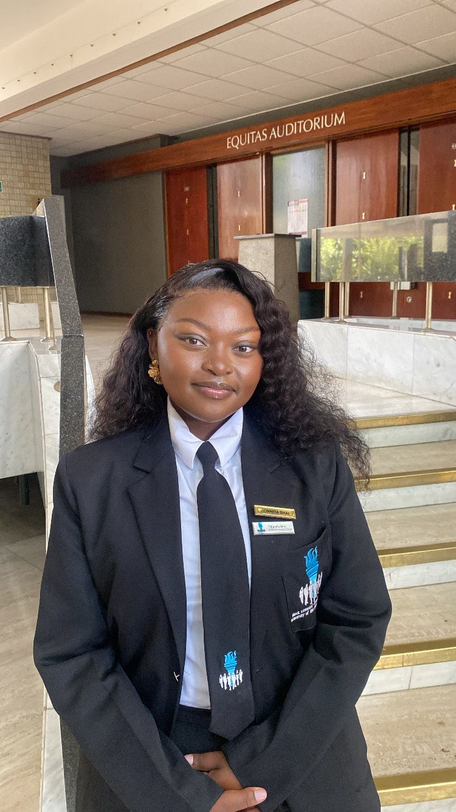
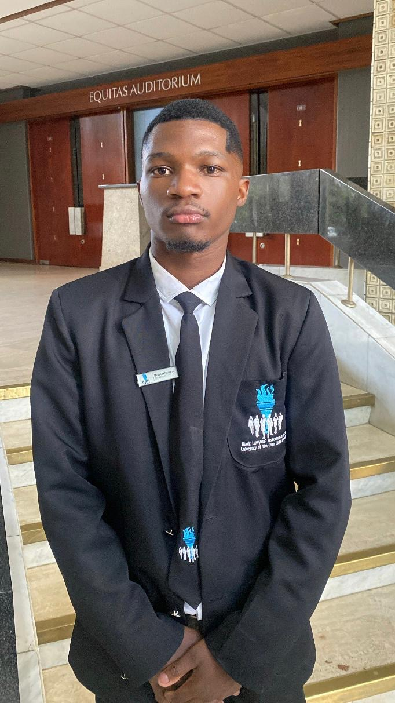
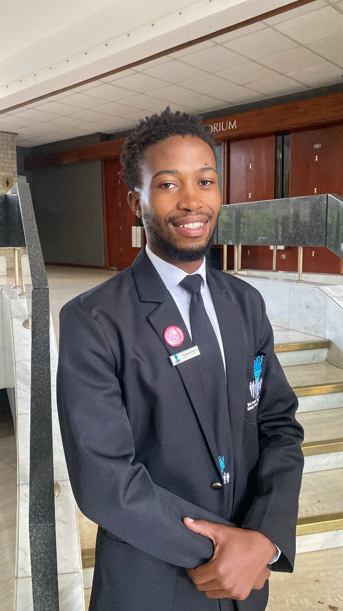

Chapter Governance
Leadership
Meet the Branch Executive Committee entrusted with advancing chapter strategy, member development, and constitutional engagement at BLASC UFS.

Chapter Governance
Meet the Branch Executive Committee entrusted with advancing chapter strategy, member development, and constitutional engagement at BLASC UFS.
First Layer Leadership
The BEC is elected annually by members in good standing. At least 50% of the BEC must be women, in line with the BLASC Constitution. The BEC serves a 12-month term and is accountable to the general membership.

Chairperson
Chief executive officer of BLASC UFS. Oversees all executive members, chairs meetings, and serves as the chapter's primary spokesperson. Co-founder of the Gear Up Learner's Licence Programme.

Deputy Chairperson
Transformative activist with racial and gender equality at the forefront of her work. Co-founded the Gear Up Programme and pioneered the BLASC UFS website. Heads disciplinary processes and drives international moot court prospects. Advancing AI Law, Cyber Law and E-Law in SA. BLASC journey: Projects & Events sub-committee 2024, impartial student 2025.

Secretary
Chief administrative officer of BLASC UFS. Manages all records, correspondence, and coordinates BEC meetings.

Deputy Secretary
Deputises the Secretary and takes primary responsibility for recruitment of new members into the chapter, ensuring continued growth and engagement.

Treasurer
Responsible for chapter finances, banking operations, fundraising coordination, and financial reporting at the AGM. Signatory to all branch financial transactions.

Academics & Legal Research
Oversees all academic programmes and legal research initiatives. Coordinates the NPA Court Shadowing Programme and keeps members updated on relevant legal developments in South Africa.

Events Coordinator
Plans and coordinates all chapter events and projects. Manages logistics end-to-end and works with the Treasurer to ensure all events are delivered on time and within budget.

Media and Publicity
Responsible for promoting BLASC UFS, maintaining the chapter's public image, advertising programmes and events, and profiling executive members for the membership.
Each portfolio (except the Chairperson) has a dedicated sub-committee. Sub-committees exist to support office bearers, extend the chapter's capacity, and give more members the opportunity to serve and grow. Sub-committee members report directly to their respective portfolio holder and are an essential part of BLASC UFS's operational backbone.
Assists with administration, minute-taking, correspondence, and maintaining chapter records under the guidance of the Secretary.
Supports financial tracking, fundraising initiatives, and budget monitoring in collaboration with the Treasurer.
Assists in coordinating academic workshops, legal research, moot court training, and the NPA Shadowing Programme.
Supports planning, logistics, and execution of all chapter events, outreach activities, and community programmes.
Assists with social media management, photography, graphic design, and communication of chapter activities to the public.
Supports membership recruitment drives, onboarding of new members, and maintenance of the membership database.
Leadership Pathway
Applications for BEC positions open during the third term of each academic year. Any member in good standing who has been active for at least one full academic year may stand for Chairperson.